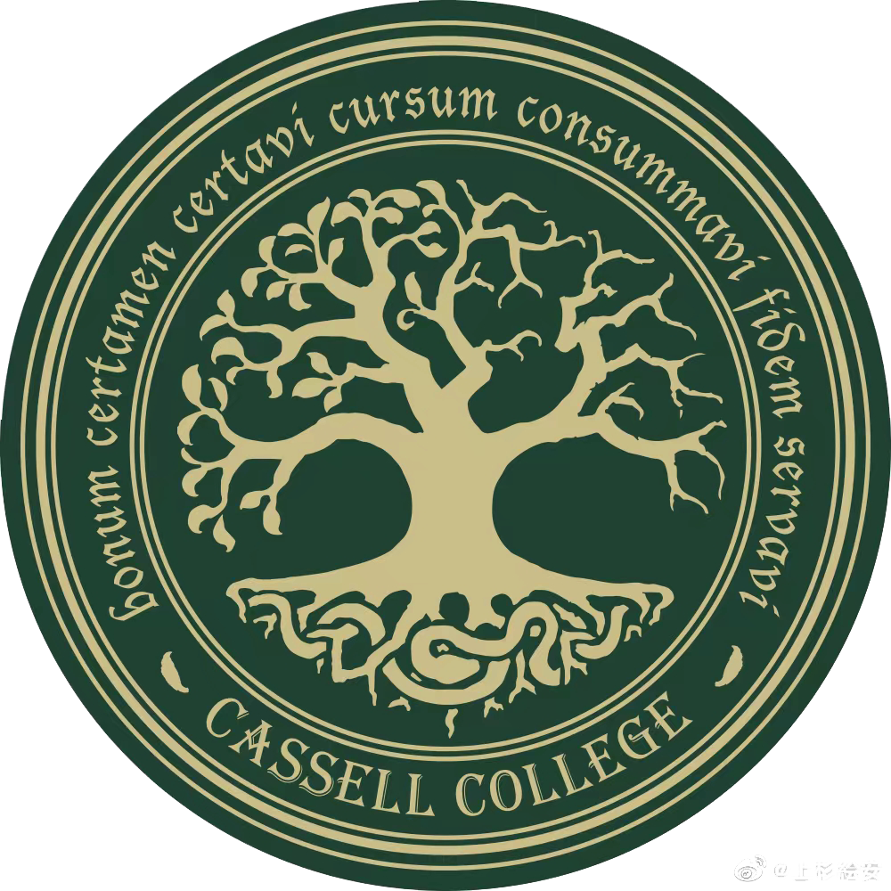
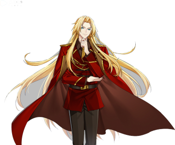
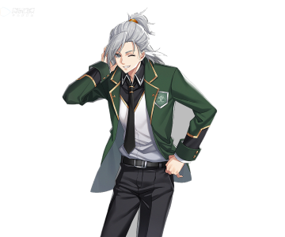
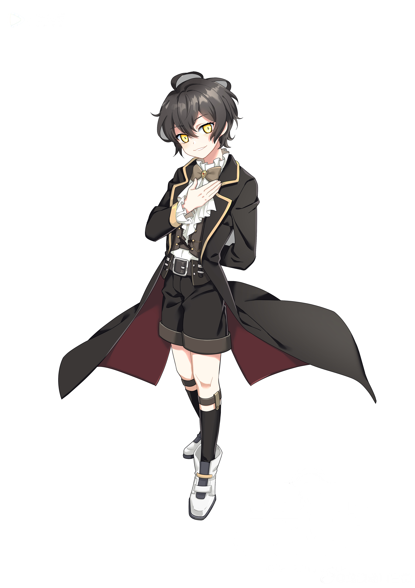
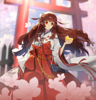
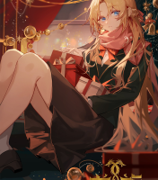
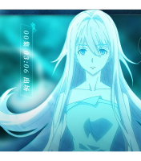
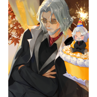
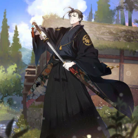

<!DOCTYPE html>
<html>
</html>
<html>
<head>
<meta charset="utf-8" name="viewport" content="width+device-width,initial-scale=1.0">
<title>龙族-卡塞尔学院</title>
	<meta name="Description" content="卡塞尔学院，龙族同人">
<meta name="Keywords" content="龙族同人官网，龙族，卡塞尔">
	<link rel="stylesheet" href="css/1.css">
</head>
<body>
<nav>
	<div class="logo">
		
	</div>
	<ul class="nav-links">
	  <li><a href="#0">网站首页</a></li>
	  <li><a href="#1">知名校友</a></li>
	  <li><a href="#2">主角介绍</a></li>
	  <li><a href="#3">时间线</a></li>
	  <li><a href="#4">其他人物</a></li>
	</ul>
</nav>
<div class="shou" id="0">
	
<p class="d">欢迎来到&nbsp;卡塞尔学院</p>
<p class="a">Cassel&nbsp;College</p>
	<p class="b">卡塞尔学院由混血种中的秘党组织创建，校名来自殒落的著名<br>屠龙家族卡塞尔家族主要功能是为秘党培养优秀的混血种人才、<br>收集研究关于龙族的一切信息、研制新型的杀伤性武器，以及<br>尽一切力量屠龙</p>
	<video class="vidio1" autoplay="autoplay" controls="controls"><source src="image/2.mp4"></video>
	</div><div align="center">
　


<div class="zhu" id="1"><h1 class="section-heading">知名校友 </h1>
	<ul>
		<li><a href="https://baike.so.com/doc/5900717-6113616.html" target="_blank"></a>
			<a href="https://baike.so.com/doc/5900717-6113616.html" target="_blank"><h2>路明非</h2></a><b>卡塞尔学院唯一的S级<br/>学生学号：AI071721S<br/>
			执行部档案号：071721S</b>
		</li>
		<li><a href="https://baike.so.com/doc/6801356-7018212.html" target="_blank"></a>
		<a href="https://baike.so.com/doc/6801356-7018212.html" target="_blank"><h2>恺撒·加图索</h2></a><b>意大利著名屠龙家族——加图索家族的继承人<br/>学号：AI112933S<br/>
			执行部档案号：112933A</b>
		</li>
		<li><a href="https://baike.so.com/doc/5517263-5748639.html" target="_blank"></a>
		<a href="https://baike.so.com/doc/5517263-5748639.html" target="_blank"><h2>楚子航</h2></a><b>卡塞尔学院狮心会前任会长，学院 的王牌专员<br/>学号：AI060143<br/>
			执行部档案号：060143A</b>
		</li>
		<li><a href="https://baike.so.com/doc/5665269-5877927.html" target="_blank"></a>
		<a href="https://baike.so.com/doc/5665269-5877927.html" target="_blank"><h2>陈墨瞳</h2></a><b>性格热情古怪，明艳张扬，自带万丈光芒，背景与身份都蕴含巨大的秘密。<br/>学号：AI00598<br/>
			执行部档案号：100598A</b>
		</li>
		<li><a href="https://baike.so.com/doc/5793813-6006606.html" target="_blank"></a>
		<a href="https://baike.so.com/doc/5793813-6006606.html" target="_blank"><h2>芬格尔·冯·弗林斯</h2></a><b>卡塞尔学院第一废柴，血统本身是很优秀的,后降至G<br/>学号：AI022077<br/>
			执行部档案号：022077F</b>
		</li>
	</ul>
<div class="zhu1">
	<div class="zhu11">
		<h1 class="section-heading" id="2">主角介绍</h1>
		</div>
	<a></a>
		<div class="lu1"><h1 style="font-size: 30px;color:#000000">路明非 </h1>
		<p style="font-size: 12px" class="aa">十八岁前是一名再平凡不过的少年，寄宿在叔叔家被忽视，暗恋女神无果，最擅长的是打游戏，理想是看报摊。十八岁这年，却因血统被评为“s”级进入卡塞尔学院，<br>从此来到龙的国度。和自称其弟的“魔鬼”路鸣泽签订交换生命的契约，在经历斩杀诺顿、斩杀芬里厄、上杉绘梨衣之死、奥丁之战后，逐渐明白自己是这个世界上<br>最大的怪物，为了寻找自己的真相而前往黑天鹅港,找到自己的墓碑。</p>
		<p class="aa"><br>职位：卡塞尔学院学生会成员→学生会主席→被通缉的在逃高危混血种<br>
学号：AI071721S（AI是《亚伯拉罕血统契》的缩写，Abraham Indenture，<br>秘党的核心契约；S是路明非的评级）<br>
执行部档案号：071721S<br>
主修学科：历史系/龙族谱系学（在《龙族2》连载版为机械系/炼金机械系）</p>
	  </div></div>
	
<div class="zhu2"><a></a>
		<div class="lu2"><h1 style="font-size: 30px;color: #000000" >路明泽 </h1>
		<p style="font-size: 12px" class="aa">外表十分精致高贵的男孩，自称路明非的弟弟,常出现在其灵视中，自称“魔鬼”，与路明非订下交换生命的契约，只在意哥哥，总在路明非危险的时候出现在其身边，<br>实现其心中所想。其最终愿望是推路明非坐上孤独的王座。身份成谜，自身即是纯血龙族而非混血种，血统凌驾于初代种之上，被称为“至尊”.
出现在路明非身边，<br>与路明非达成灵魂契约，在其接受了他的四次召唤、或者承认自己孤独的时候，契约解除，路明非的生命（灵魂和肉体）归他所有。（一说：二人每次交易的生命<br>其实是路鸣泽的命）似乎与路明非真正相处时间有万年之久，与路明非融合后被称为“世界的终极”，是龙族史上仅有的三位可以改变他人血统之人。</p>
</div></div>
	<div class="zhu3" id="3"><h1 class="section-heading">时间线</h1>
	<div id="timeline">

	<div class="timecenter">    
	
		<div class="timeline-box">
			<h3>2009年</h3>
			<p>“S”级新生路明非入学卡塞尔学院,路明非第一次见到路明泽</p>
		</div>
		
		<div class="timeline-box">
			<h3>2010年2月13日</h3>
			<p class="ab">路明非与路明泽签订契约，并交出第一个1/4生命</p>
			<p>重创诺顿</p>
			<p>后由酒德麻衣补刀杀死</p>
		</div>
		
		<div class="timeline-box">
			<h3>2010年</h3>
			<p>楚子航杀死耶梦加得（夏弥）</p>
			<p>路明非交出第二个1/4生命</p>
			<p>杀死了芬里厄</p>
		</div>   
		
		<div class="timeline-box">
			<h3>2011年</h3>
			<p>橘政宗布局多年终成新白王</p>
			<p>路明非交出第三个1/4生命配合加图索家天基动能武器天谴</p>
			<p>杀死赫尔佐格</p>
		</div>
	
		<div class="timeline-box">
			<h3>2012年</h3>
			<p>路明非发现楚子航消失</p>
			<p>为从奥丁手下救出诺诺，贡献最后一个1/4生命</p>
			<p>最终找到楚子航</p>
		</div>  
		<div class="timeline_div">
			<div></div>
			<div></div>
			<div></div>
			<div></div>
			<div></div>
			<div></div>
			<div></div>
			<div></div>
			<div></div>
			<div></div>
			<div></div>
			<div></div>
			<div></div>
			<div></div>
			<div></div>
			<div></div>
			<div></div>
		</div>
		
	</div>
	
</div></div>
	<script src="js/index.js" ></script>

<section class="team" id="4">
  <h2 class="section-heading">其他人物</h2>
  <div class="container">
	<div class="profile">
	  <span class="name">上杉绘梨衣</span>
	</div>
	<div class="profile">
	<span class="name">夏弥</span>
	</div>

	<div class="profile">
	  <span class="name" >零&nbsp;</span>
	</div>
	<div class="profile">
	  <span class="name">诺玛</span>
	</div>
	<div class="profile">
	  <span class="name">希尔伯特·让·昂热</span>
	</div>
	<div class="profile">
	  <span class="name">源稚生</span>
	</div>
	<div class="profile">
	  <span class="name">酒德亚纪</span>
	</div>
  </div>
</section>	
</body>
</html>
